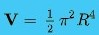

The set of points in Euclidean 4-space having the same distance R from a fixed point P0 forms a hypersurface known as a 3-sphere. The hyper-volume of the enclosed space is:

This is part of the Friedmann–Lemaître–Robertson–Walker metric in General relativity where R is substituted by function R(t) with t meaning the cosmological age of the universe. Growing or shrinking R with time means expanding or collapsing universe, depending on the mass density inside.[14]
Stereographic projection of a Clifford torus: the set of points (cos(a), sin(a), cos(b), sin(b)), which is a subset of the 3-sphere.